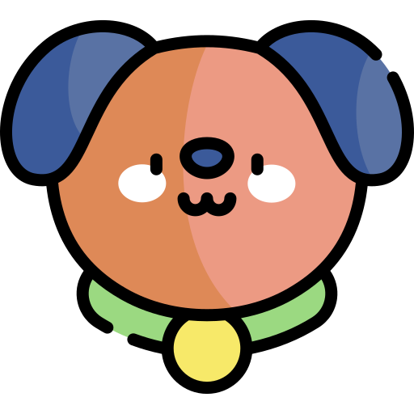
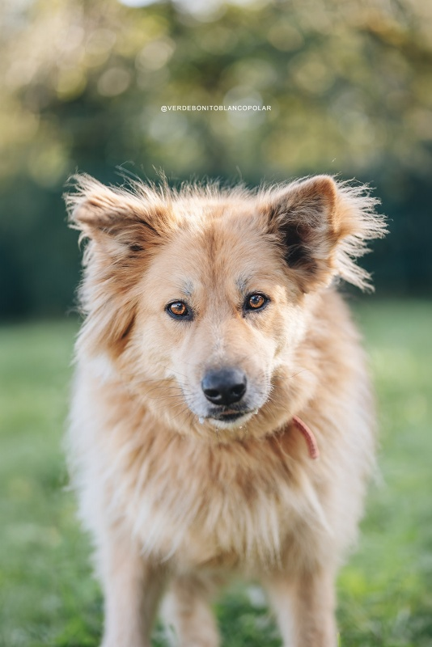

Pet
Family
Pet
Family
Registrarse
Adopta
Colabora
Dona
Apadrina
Acoge
Protectoras
Foro
Mapa
Tests
Registrarse
Inicio
›
Adopta

Urgencia
Todas
Urgente
Nuevo
Larga espera
Ubicación
Todas
Gijón
Oviedo
Avilés
Tamaño
Todos
Pequeño
Mediano
Grande
Más filtros
Limpiar
Edad
Todas
Cachorro (0-1 año)
Joven (1-3 años)
Adulto (3-8 años)
Senior (8+ años)
Color
Todos
Negro
Blanco
Marrón
Atigrado
Bicolor
Estado de salud
Todos
Bueno
Necesidades especiales
Sexo
Todos
Macho
Hembra
Licencia PPP
Leia
Gijón
14 años
Mediano · Pit bull
En adopción:
Larga espera
Vista
0
veces
Ver ficha

Urgente
Haru
Oviedo
7 años
Grande
En adopción:
1 año
Vista
0
veces
Ver ficha
Nuevo
Roy
Avilés
2 años
Pequeño · Europeo
En adopción:
Recién llegado
Vista
0
veces
Ver ficha
Bambi
Oviedo
Sin determinar
Pequeño
En adopción:
Sin datos
Vista
0
veces
Ver ficha
Urgente
Dexter
Gijón
10 años
Mediano · Cruce Pastor Alemán
En adopción: 9 años
Vista
0
veces
Ver ficha
Leucemia felina+
Bosque
Oviedo
8 meses
Pequeño
En adopción:
3 meses
Vista
0
veces
Ver ficha